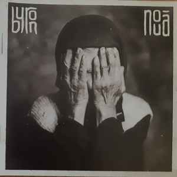

About the Album
"Nouă" is the seventh album by Bucharest art rock band Byron, released in November 2019 and launched with a sold-out concert at Arenele Romane. The band's first record written entirely in Romanian, it is a cycle of twelve songs about those who left the country and those who stayed home, combining progressive rock arrangements and string sections with Dan Byron's satirical and introspective lyrics about Romanian society.
Tracklist
- Acasă
- Consumatori de vise
- Azi
- Apă și cer
- Continuum
- Fără cuvinte
- Anima
- Șobolani și ciocoi
- Râzi
- El Dorado
- Nouă
- Cântec de leagăn